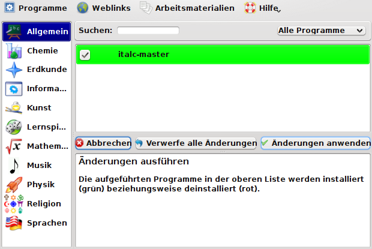

eduversum Hilfe
Allgemeines zur Benutzung vom "eduversum" | Deinstallation von Programmen | en
Installation von nicht installierten Programmen
Programm Auswahl
Dazu ist im Auswahlfenster oben rechts der Menü-Punkt < Nur nicht installierte > auszuwählen.
Bei vorhandener Internetanbindung ist es möglich auch nicht auf dem Medium enthaltene, aber im Menüsystem aufgeführte Programme einfach zu installieren.
Dafür wird das entsprechende Programm (hier als Beispiel "iTALC") markiert und der Button < Änderungen anzeigen > geklickt.
Installation beginnen
Nun wird der Button (Knopf) < Änderungen ausführen > angeklickt, um die Installation des Programms zu starten.

Wie gesagt, eine funktionierende Internet-Anbindung ist notwendig!
Passwort-Eingabe
Ein "root acount" muss natürlich vorhanden sein, ansonsten wird hier die Installation abgebrochen.
Dies dient zur eigenen Sicherheit.
- Nur "root" hat auf Linux-Systemen Zugang zu systemspezifischen Daten und Einstellungen. Dadurch ist das System vor Missbrauch sicherer.
- Die unbefugte Installation eines Programmes wird damit unterbunden.
- Auf diese Art wird unüberlegtes Handeln verhindert.
Weitere Informationen zu diesem Thema können in den entsprechenden Tutorien gefunden werden.
Das "root" Passwort eingeben und auf < OK > klicken.
Update-Dialog
Nun sollte die interne Paketdatenbank auf den aktuellsten Stand gebracht werden.
Paketindex neu einlesen [...] markieren.
Auf < weiter > klicken.
Update-Informationen
Wenn < Details anzeigen > angeklickt wird, kann gesehen werden, was geschieht.
Hier die Ausgabe der Aktualisierung des internen Paket-Indexes.
Ist die Aktualisierung abgeschlossen, auf < weiter > klicken.
Änderungs-Information
Nun wird angezeigt welche Änderungen vorgenommen werden.
Die angezeigten Dateien werden in diesem Falle installiert.
Farbig hervorgehobene Dateien werden zusätzlich installiert bzw. aktualisiert, um Programmabhängigkeiten aufzulösen.
Auf < weiter > klicken um die Installation der entsprechenden Programme zu starten.
Download Dialog
Ist der Download abgeschlossen, auf < weiter > klicken.
Installations-Dialog
Wenn die Installation beendet ist, auf < Schliessen > klicken.
Wenn Sie mehr über den Installationsprozess unter Debian erfahren wollen, konsultieren Sie bitte die entsprechenden Howto's und/oder "man pages" (man apt, man apt-get,...).
Das installierte Programm starten
Nun wählen Sie die entsprechende Abteilung aus, in diesem Fall "Allgemein" und markieren das Programm (hier iTALC).
Klicken Sie < Starten >.
Hinweis
Installieren Sie ein Programm während einer "Live Sitzung" (Live-CD/DVD), so werden die Änderungen nur temporär im "ram" gespeichert und gehen beim Beenden der Sitzung verloren!
Um dies zu verhindern, können Sie mit Hilfe der "Live-CD/DVD" auch ein dauerhaftes Homeverzeichnis angelegen.
Informationen zu diesem Thema finden Sie im "sidux manual" und "seminarix Handbuch".
Allgemeines zur Benutzung vom "eduversum" | Deinstallation von Programmen | en
Copyright © 2009, Hendrik Lehmbruch: CC-by-SA 3.0